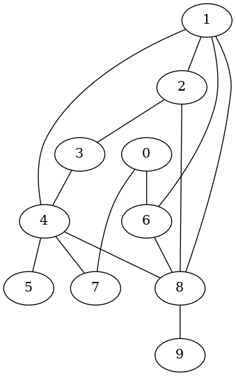
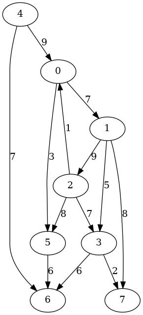

グラフのデータ構造
グラフのレコード型
グラフを扱うためのデータ構造として，以下のように定義されるレコードを使用します．
(define-record-type <graph>
(make-graph number-of-nodes ;; 頂点数
number-of-edges ;; 辺数
type ;; 無向（'undirected） か 有向（'directed）
root ;; グラフの根
adj) ;; 隣接リスト構造
graph?
(number-of-nodes get-num-nodes set-num-nodes!)
(number-of-edges get-num-edges set-num-edges!)
(type get-type set-type!)
(root get-root set-root!)
(adj get-adj-vector set-adj-vector!))
ここで：
以後，このレコードを
グラフレコードと呼ぶことにします．
グラフレコードの手続き
上記の各フィールドのアクセッサやモディファイアに加えて，
グラフレコードに関して次のようなマクロを利用します．
これらをマクロにしているのは，今後の実験において100万頂点や1000万頂点のグラフを扱うつもりなので，手続き呼び出しのオーバーヘッドを少しでも減らすためです．
;; G が無向グラフのとき #t を返し，有向グラフのとき #f を返す．
(define-syntax-rule (undirected? G)
(eq? (get-type G) 'undirected))
;; G が有向グラフのとき #t を返し，無向グラフのとき #f を返す．
(define-syntax-rule (directed? G)
(eq? (get-type G) 'directed))
;; 頂点uの隣接リスト adj[u] に隣接点ペア (v . weight) を追加する．
(define-syntax-rule (add-directed-edge adj u v weight)
(vector-set! adj u (cons (cons v weight) (vector-ref adj u))))
;; 頂点uの隣接リスト adj[u] に隣接点ペア (v . weight) を追加し，
;; 頂点vの隣接リスト adj[v] に隣接点ペア (u . weight) を追加する．
(define-syntax-rule (add-undirected-edge adj u v weight)
(begin
(vector-set! adj u (cons (cons v weight) (vector-ref adj u)))
(vector-set! adj v (cons (cons u weight) (vector-ref adj v)))))
これらに加えて，これ以後の実行例の中で次のようなユーティリティも使用します．
;; グラフGの隣接リストベクタを適当な形式で表示する．
(define* (show-graph G #:optional (print-neighbors #t))
...... 詳細略 ......
)
;; Graphvizを利用してグラフGの画像データを生成する．
(define (make-graphviz G fname)
...... 詳細略 ......
)
モジュール
グラフレコードの定義と各種手続きをまとめて adjlist という名前のモジュールにしています．そのため，今後の実行例では，
上記の定義や手続きを使うためにこのモジュールを次のようにロードします．
(use-modules (adjlist))
このモジュールは
ajdlist.scm
にあります．
具体例
辺に重みのない無向グラフの具体例
以下の gen-graph は辺に重みのない$n$頂点の無向グラフを適当に生成します．以下の2番目のループは次のような計算を$2 \times n$回繰り返します．
-
頂点$u$と$v$の組をランダムに生成します．
-
$u\not=v$かつ辺$\{u,v\}$がまだ生成されていないとき，
辺$\{u,v\}$を隣接リストベクタ adj に登録します．
そうでないときには何もしません．
;; ugraph-sample.scm
(add-to-load-path (getcwd))
(use-modules (adjlist))
(set! *random-state* (random-state-from-platform))
(define (gen-ugraph n)
(define adj (make-vector n '()))
(define nedges 0)
(define (ecode u v) (+ (* n u) v))
(define selected (make-bitvector (* n n) #f))
(let loop ((u 0))
(when (< u n)
(bitvector-set-bit! selected (ecode u u))
(loop (1+ u))))
(define ntrials (* 2 n))
(let loop ((k 0) (u (random n)) (v (random n)))
(when (< k ntrials)
(when (bitvector-bit-clear? selected (ecode u v))
(add-undirected-edge adj u v #f)
(bitvector-set-bit! selected (ecode u v))
(bitvector-set-bit! selected (ecode v u))
(set! nedges (1+ nedges)))
(loop (1+ k) (random n) (random n))))
(make-graph n nedges 'undirected 0 adj))
以下の実行例は$10$頂点の無向グラフを生成していて，
隣接リストベクタには14本の辺が登録されています．
この例の場合，根は意味を持ちません．
右側の図は Gaphviz を使って生成したものです．
$ guile -l ugraph-sample.scm
...... コンパイルメッセージ＆起動メッセージ ......
guile> (define G (gen-ugraph 10))
guile> (show-graph G)
The # of nodes:10
The # of edges:14
graph type:undirected
The root:0
adj[0] -- ((7 . #f) (6 . #f))
adj[1] -- ((6 . #f) (4 . #f) (2 . #f) (8 . #f))
adj[2] -- ((3 . #f) (1 . #f) (8 . #f))
adj[3] -- ((2 . #f) (4 . #f))
adj[4] -- ((7 . #f) (8 . #f) (1 . #f) (3 . #f) (5 . #f))
adj[5] -- ((4 . #f))
adj[6] -- ((8 . #f) (1 . #f) (0 . #f))
adj[7] -- ((4 . #f) (0 . #f))
adj[8] -- ((4 . #f) (6 . #f) (9 . #f) (1 . #f) (2 . #f))
adj[9] -- ((8 . #f))
guile> (make-graphviz G "graph1")
$1 = 0
|
|

|
辺重み付き有向グラフの具体例
以下の gen-digraph も前述した手続きとほぼ同じ処理を行っています．
違いは，有向グラフを生成しているうこと，1以上10未満の整数をランダムに生成して辺の重みにしていることです．
;; digraph-sample.scm
(add-to-load-path (getcwd))
(use-modules (adjlist))
(set! *random-state* (random-state-from-platform))
(define (gen-digraph n)
(define adj (make-vector n '()))
(define nedges 0)
(define (random-weight lb ub) (+ lb (random (- ub lb))))
(define (ecode u v) (+ (* n u) v))
(define selected (make-bitvector (* n n) #f))
(let loop ((u 0))
(when (< u n)
(bitvector-set-bit! selected (ecode u u))
(loop (1+ u))))
(define ntrials (* 2 n))
(let loop ((k 0) (u (random n)) (v (random n)))
(when (< k ntrials)
(when (bitvector-bit-clear? selected (ecode u v))
(add-directed-edge adj u v (random-weight 1 10))
(bitvector-set-bit! selected (ecode u v))
(set! nedges (1+ nedges)))
(loop (1+ k) (random n) (random n))))
(make-graph n nedges 'directed 0 adj))
以下の実行例は8頂点の辺重み付き有向グラフを生成しています．
この例の場合も根（root）は意味を持ちません．
$ guile -l digraph-sample.scm
...... コンパイルメッセージ＆起動メッセージ ......
guile> (define G (gen-digraph ))
guile> (show-graph G)
The # of nodes:8
The # of edges:13
graph type:directed
The root:0
adj[0] -> ((1 . 7) (5 . 3))
adj[1] -> ((2 . 9) (3 . 5) (7 . 8))
adj[2] -> ((0 . 1) (3 . 7) (5 . 8))
adj[3] -> ((6 . 6) (7 . 2))
adj[4] -> ((0 . 9) (6 . 7))
adj[5] -> ((6 . 6))
adj[6] -> ()
adj[7] -> ()
guile> (make-graphviz G "graph2")
$1 = 0
|
|

|